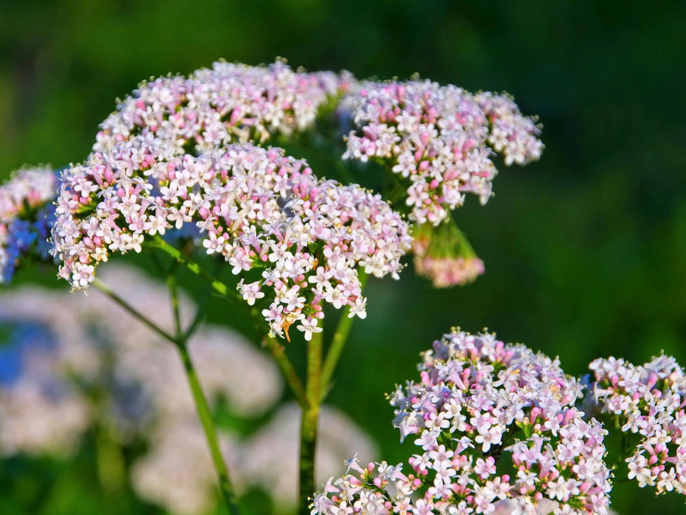

Растёт у воды. Любит прибрежные луга, берега болот и сырые овражки. Двухметровый ребристый стебель с розоватыми зонтиками видно издалека, если знаешь, куда смотреть. Встречается почти по всей России.
Нервный сон, больное сердце, спазмы в животе — в походе всякое может случиться. Валериана — это тяжёлая артиллерия спокойствия. Старые травники копали её корень, когда нужно было унять истерику, успокоить сердцебиение или просто выспаться после трудного дня. Говорят, помогает даже при мигрени.
Сухие корни с корневищем — 1 столовая ложка. Вода — 1 стакан. Способ применения: залить корни тёплой водой и томить на водяной бане минут 15, либо просто заварить кипятком и дать постоять до полного остывания. Принимать по 1–2 столовые ложки после еды. Не пить стаканами — это не успокоительный компот, а сильное средство. Запах у настоя специфический, но действует безотказно.